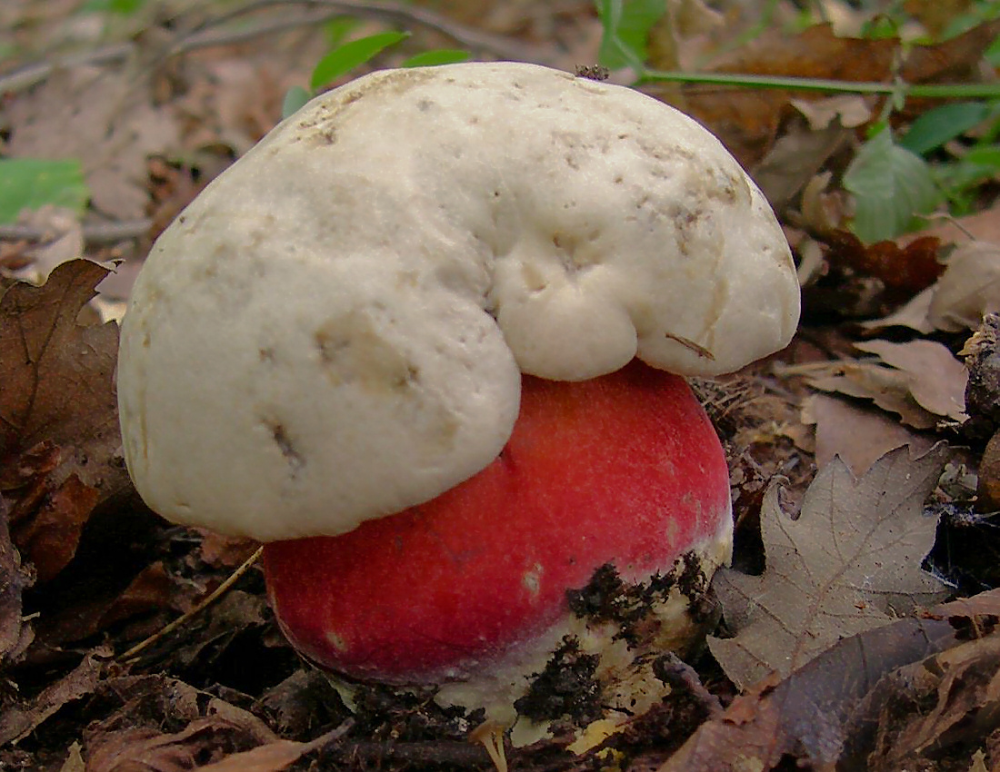
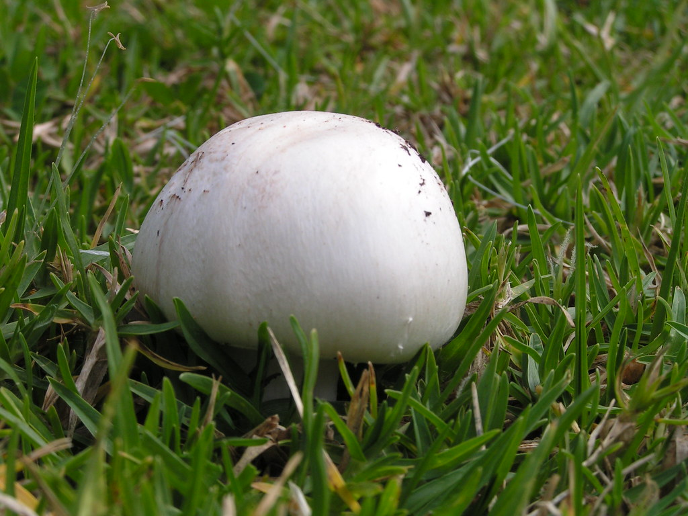
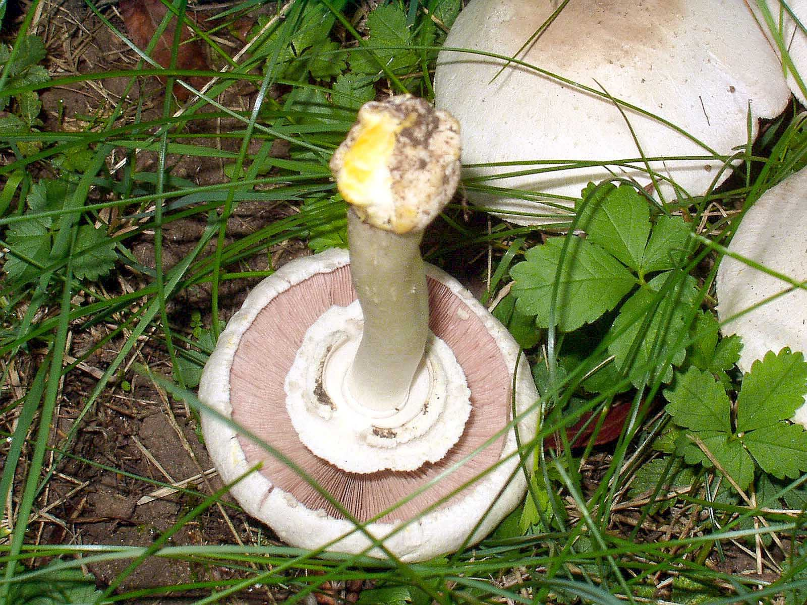
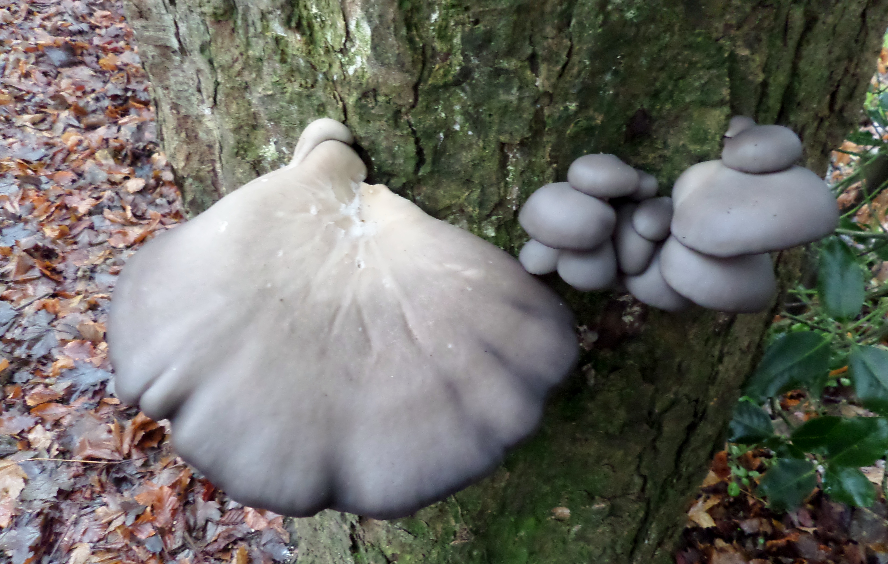
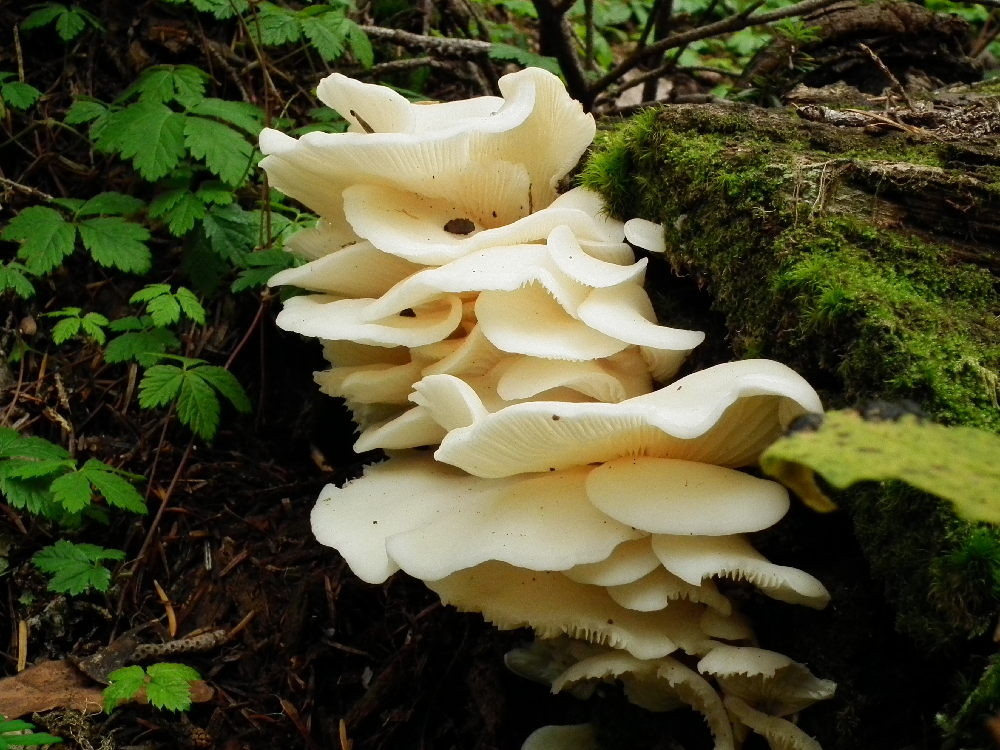
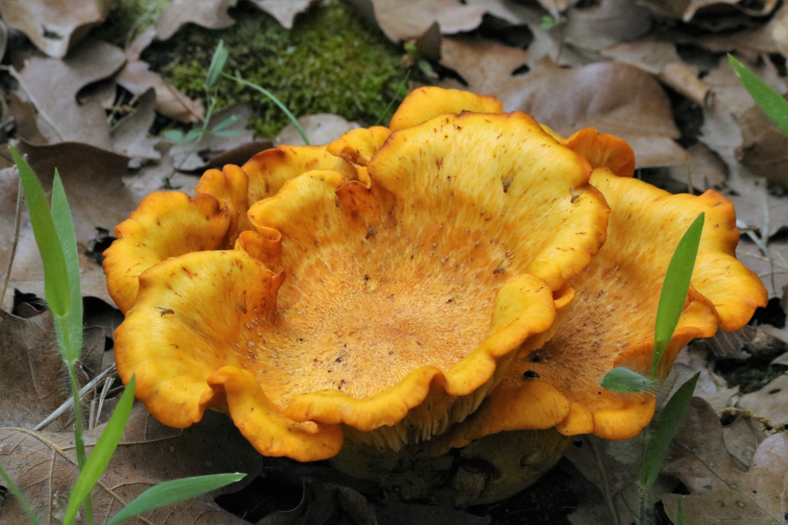

Edible Species of Mushroom in Ireland
There is a wide variety of fungi you can encouter on a pleasant stroll through the forest parks and nature trails dotted throughout Ireland. Some of them may look very strange and arguably unappetising but I assure you each has a distinctive and delicous flavour that you just won't find from something bought in the store. Here is a list of the most common and easily identifiable types you'll find out and about on the forage.
Boletus Edulis

Other Names:
Ceps, Porcini, Penny Bun
Description:
One of the most well-known and highly regarded of the edible wild mushroooms.Recognisable among the edible species, they are medium to large in size (5-25cm cap) and boast a smooth, dry, brown cap with the edge often being white. This is where it got it's other name Penny Bun for it's similiar appearance to the food. They have foam-like pores instead of gills underneath which are usually yellow to olive-brown in colour. The pale brown stem is stout and bulging and is streaked with white. Notably has no ring on the stem. Flesh is white and smells pleasant and is often revealed when the mushroom was attacked by insects. It is important to cut them in half before eating to check for insects and to scrape out the 'gill' tissue and throw away the stem.
Taste:
nutty, subtle
Habitat:
Likes all woodland but especially beech, oak or pine.
Season:
August to September
Occurrence Rate:
Fairly common
Dishes:
Suitable for frying, soups, eating raw and ground into a powder after being dried and used as falvouring.
Not to be confused with...
There are no other poisonous mushrooms that look similar except for the Devil's Bolete which can be distinguished by having red pores which bruise blue-green and a very unpleasant smell. while not fatal it can cause severe gastric issues.Pictured below.
Agaricus campestris
Description:
The only mushrrom on this list that will look familiar to the uninitiated forager.White Cap 3-10cm across with pink gills that can turn brown with age. It has a white stem and ring which is ajoined go the cap in young specimens. There is no sheath at the base of the stem.They can be quite difficult to see as they're often hidden in the grass. The best way to search for them is to slowly quarter a field or meadow and once one is found it is likely there are more nearby because mushrooms grow from a network of mycellium underground which is the part of the organism that survives after the mushroom has died. The field mushroom grows well in natural meadows fertilised by horse manure and the increased use of modern fertilisers have lead to them becomming much less common.
Taste:
meaty, rich
Habitat:
meadow and pasture
Season:
July to November
Occurrence Rate:
common
Dishes:
mushroom soup, stuffed mushrooms
Not to be confused with...
You must be careful not to confuse it with the Yellow Stainer. The easiest way to do this is after picking the mushroom cut the stem at the base. If it turns a yellow colour it is the poisonous yellow stainer. just because a fungus looks like one you will find in the shops doesn't mean it will be edible
Pleurotus Ostreatus
Other Names
Oyster Mushroom
Description
Known as a bracket fungus becuase it grows on the side of dying trees, this fungus grows in shelves of dozens of fungi with each cap growing up to 20cm across but usually much shorter especially in the summer. Quite easily identified due to the cap that bears resemblence to that of an oyster's shell, it is usually dark grey, brown or blueish in colour with white flesh and veins that run on the underside of the cap. Unlike other mushrooms it has no obvious stem and instead the white gills converge into a nub that seems to disappear into the tree. Due to their popularity it s now possible to buy prespawned logs which you can keep at home and cultivate these mushrooms for convenient harvesting, though that kind of thing is looked down upon by people in this community, myself included. Best harvested when small for a softer texture.
Taste:
mild, meaty
Habitat:
old ash and beech trees
Season:
All year round
Occurrence Rate:
Common
Dishes:
Great in stir frys and rich dishes as it is not overpowering in flavour, though it must be cooked thoroughly becuase it is quite tough.
Not to be confused with...
The Angels Wing mushroom is a ghostly white and very pretty mushroom that grows in moss in coniferous woodland. Oyster nushrooms never grow on coniferous trees. The Angel Wings is edible but there is mounting evidenc that is can lead to severe brain damage if eaten by someone with poorly functioning kidneys so should be avoided at all costs.
Cantharellus cibarius

Other names:
Chantrelle, Girole
Description:
Funnel shaped and usually 2-7cm across the cap. Unformly egg yellow in colour and has the perfume aroma of fruit or apricots. The gills which are clearly visible are vein-like and shallow and fork out. This fungus has no ring. The edge of the cap is crinkled and resembles a flowers petals. Luckily these fungi are not favourited by insects and can often be found in pristine conditon. They are one of the most frequently cultivated wild mushroom varieties throughout the world.
Taste:
woody,earthy, slightly peppery
Habitat:
Woodland of all types but especially beech and proliferates around the same trees each year.
Season:
July to December
Occurrence Rate:
common
Dishes:
Slightly chewy in texture so should be stewed gently in milk for 10 minutes or fried with garlic and parsley. Traditionally served with scrambled eggs
Not to be confused with:
The False Chanterelle which is not common and is a deeper orange in colour. Generally more rounded and it also lacks the apricot aroma of the true Chanterelle.Pictured Below.
